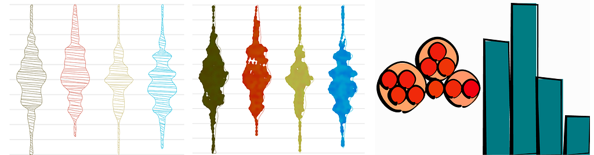
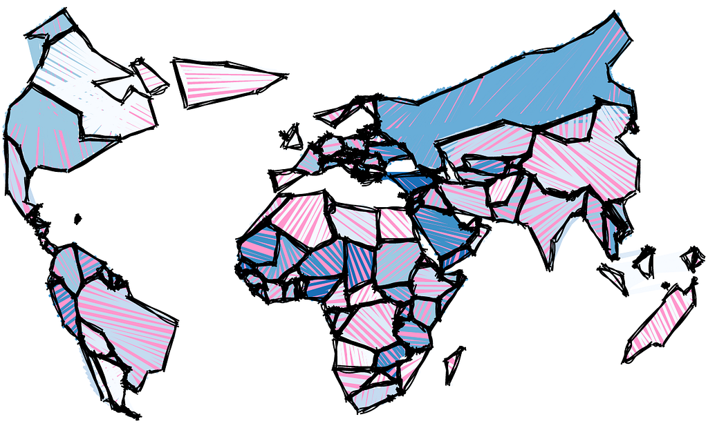
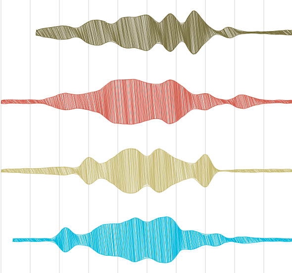
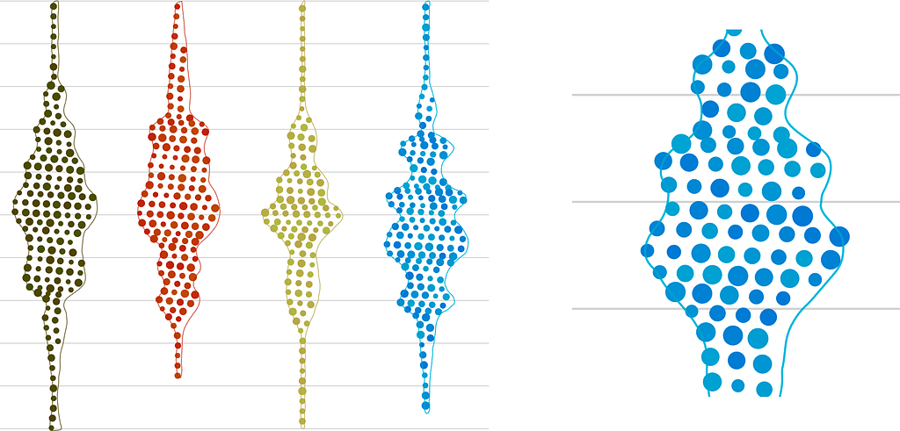

When I open-sourced Semiotic, I expected to get some pushback on its support for hand-drawn “sketchy” rendering in marks. I also expected some questions as to how it and its accompanying “painty” mode are implemented. Instead, except for a couple friendly jibes, mostly of the response to Semiotic has been on its focus on information design. But I wanted to make sure to highlight the sketchy functionality nonetheless.
Sketchy rendering is also known as non-photorealistic rendering, which I find hilarious (what is photorealistic data visualization?) but perhaps better than “sketchy”, which is a bit misleading, since it implies the hand-drawn style typified by the handy library for Processing. Just because you’re not rendering a shape in a crisp, conventional way doesn’t mean you’re following the exact same approach. Not all approaches to distorting a shape or implying inexactness are done by giving it a hand-drawn effect. Though the methods may differ, these different approaches are just a moment in the rendering of a shape, after you’ve mapped data to particular channels of the shape, to impute imprecision upon the shape.
Here are three different rendering modes, only one of which is really “sketchy” but all of which have that same capacity for communicating that the shape is unfinished or imprecise or otherwise less “scientific.”

The first, on the left, is the “sketchy” mode in Semiotic and the traditional concept of “non-photorealistic rendering”: some kind of inexact outline filled with multiple strokes.
The second, what is called “painty” in Semiotic, is more of an irregular, gooey fill inspired directly by Nadieh Bremer’s work on using SVG filters in data visualization. The last is from my own work back in 2014 on a library called d3.sketchy that replaced rectangles and circles with slightly irregular outlines meant to resemble heavy black ink outlines.
None of these are quite so sophisticated as the original handy implementation, which provided more hand-drawn styles of fills and outlines. When coupled with geographical simplification available in libraries like topojson, this allows you to make amazing maps like the one below. You can see the shapes fill in animated fashion in its original block.

For Semiotic, I didn’t use that kind of functionality (or other more sophisticated approaches, like Noah Veltman’s scribbly fill) because, even though I found the aesthetics to be amazing, I just needed to transform a shape into something like a hand-drawn shape. So, I wrote a “cheap” sketchy function with pretty simple functionality. Here’s the cheapSketchy function in Semiotic is only slightly more sophisticated:
export function cheapSketchy(path, opacity = 1) {
if (opacity === 0) {
//no fill
return "";
}const opacitySketchyScale = scaleLinear()
.domain([0, 1])
.range([10, 1])
.clamp(true);
const length = path.getTotalLength();
let drawCode = "";
let x = 0;
const step = opacitySketchyScale(opacity);
while (x < length / 2) {
let start = path.getPointAtLength(x);
let end = path.getPointAtLength(length - x);
drawCode += " M" + (start.x + (Math.random() * step - step / 2))
+ " " + (start.y + (Math.random() * step - step / 2))
+ "L" + (end.x + (Math.random() * step - step / 2))
+ " " + (end.y + (Math.random() * step - step / 2));
x += step + Math.random() * step;
}
return drawCode;
}

It’s a simple function that takes advantage of native SVG functionality to give you the length of a path and the XY coordinates of the path at particular lengths. It draws a line starting at steps along the path and ending at a a co-equal step from the end of the line, with a little randomness thrown in to make it look sketchy. This won’t work with SVG:rect or SVG:circle elements, so part of what <Mark> does under the hood is transform those elements into paths when you set the render mode to “sketchy”.
This is followed by jittering the outline, which isn’t as great as the hand-drawn multiple outlines but is faster and good enough to get the point across that this is not photorealistic data visualization. The last step is to clip the fill sketchiness to the original shape, so that any odd angles don’t cause sketchy fills outside the shape itself. This creates a rather bloated DOM, though, because a single normally rendered <rect> becomes 4 different<path> elements:
- The original path inside a <clipPath> to crop the fill.
- A fill path that consists of all the hatchy fill lines all which have a stroke corresponding to the fill style of the original shape.
- A stroke path drawn above that one to show the jittered stroke set to the stroke style of the original shape.
- A fully transparent path of the original shape drawn over all of those with the original events of the shape registered on it.
That may not be the most efficient approach, and if someone wants to write a better one — especially one that doesn’t involve rendering the shape elsewhere to take advantage of the built-in SVG getPointAtLength functionality — by all means I am ready to approve that pull request. However, it works, and it’s simple to reason about and also implement further features on, such as opacity handling.
I struggled with trying to understand how the original opacity style of a shape should be handled in its sketchy version. Because of how the cheap sketchy function works, I settled on increasing the distance between the points on the shape outline corresponding to the original opacity. In other words, if you create a shape with style { opacity: 0.5 } it will have fewer sketchy fill strokes than a shape with style { opacity: 1 }.

Less straightforward and even more inefficient is the painty rendering mode which creates a bunch of circles of a slightly randomized version of the color from the original fill and then drops a filter on top of them. Just imagine if you drew circles along those orange lines from above, that’s all this function does, but because they’re in a shape with an SVG filter on it, they end up looking gooey.
Here’s what a painty shape (created by an aptly named cheapPopArtsy function in Semiotic) looks like without a filter.

But why draw sketchy data visualization at all? Different rendering modes, like sketchy but also pattern fills and other SVG effects, are attention grabbing and that’s a practical, useful reason. Data visualization practitioners tend to dismiss aesthetic reasoning, preferring something more statistically significant. But aesthetics grow in importance when a work is judged by engagement. If you create data visualization and you know that people are going to use it, regardless of how ugly it is, then you have a skewed view of the importance of aesthetics. And given the look of most internal tools and dashboards in industry, that skewed perspective is quite common.
Most data visualization has to carry water not only for portraying trends in data but also for encouraging the reader to actually pay attention. In that regard, sketchy rendering is extremely practical. I added sketchy rendering into Semiotic is because I’m convinced the only reason it’s so rare is that it’s kind of a hassle to implement. In Semiotic, all it takes is changing a setting to “sketchy” or “painty”.
In situations where the aesthetic value of a sketchy data visualization is unimportant, there’s still a place for sketchy rendering. I wanted to show the various complex data visualization layouts available in D3 but I wanted the audience to focus not on the data being represented but on the layouts themselves. In that way, the disruption that sketchy rendering provides, especially when the sketchiness is increased to the point of loose rendering, is exactly what I want.
There’s a third reason for trying out sketchy rendering — one backed up by research. As described in Sketchy Rendering for Information Visualization, users respond to sketchy data visualization in measurable ways. Rectangles suffer less from sketchy fills and strokes than circles, as far as evaluation of size — so using sketchy effects for aesthetic purposes in data visualization products made up of rectangles (bar charts and treemaps) is less of a stretch than using it circles or irregular paths. And while the paper supports my previous two points, it also provides exciting results of a study indicating that readers can provide an accurate though imprecise degree of sketchiness that correlates with sketchy settings. That means you could tie sketchiness to uncertainty or significance values, and render the mean value of a distribution with uneven variability in a different way than you might one with a standard distribution. To better support this use case, the sketchy rendering in Semiotic needs to be closer to the Handy implementation than the current cheap sketchy it currently has.
Sketchy rendering has real professional application, just like animation. It’s just that we haven’t had the chance to experiment with it like we have with animated transitions because the existing solutions for deploying sketchy rendering make it time-consuming to implement. That’s the main reason why I integrated it into Semiotic. I figured if it was easier to do, we would see it more often, and, as a result we might discover how and when it might be useful more generally.
Should you use sketchy rendering in your data visualization products? Yes, especially in the early design phases when you want users to be comfortable providing feedback. If you present your initial prototype data visualization for review and it uses non-photorealistic rendering, you’ll probably have a better chance of receiving feedback. You should also experiment with it for other roles, like visualizing uncertainty or for more informal data visualization that needs to compete in an attention economy.
Crisp, perfect data visualization is effective and powerful, but data visualization is simply communication, and sometimes what you want to communicate precisely is that the data is imprecise. Sometimes you want to use scientifically proven principles of visual display of information to communicate that the results are not scientifically proven. Sketchy data visualization is like that sketchy friend you had in high school: Fun and reputation-damaging but, in certain circumstances, exactly what you need.